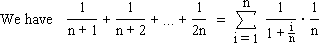
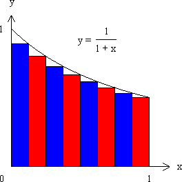
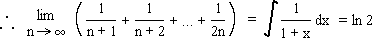
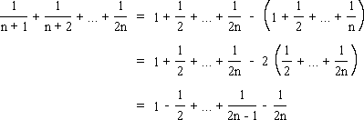
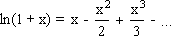

Solution to puzzle 60: Sum of reciprocals
By Riemann sum

This corresponds to a Riemann sum for the function f(x) = 1/(1 + x), over the closed interval [0, 1], using n subintervals of equal width. The graph below illustrates this Riemann sum for n = 8.


By Maclaurin series
Consider

The Maclaurin series for ln(1 + x), valid for -1 < x  1, is:
1, is:

The result now follows by setting x = 1.
Further reading
Source: Traditional